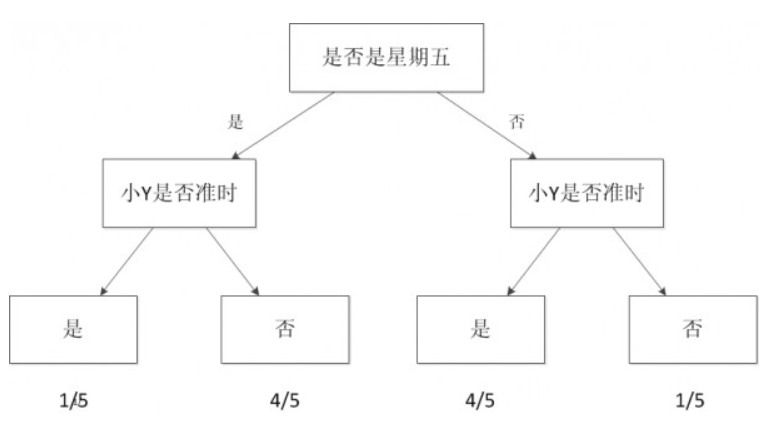

本文是机器学习入门的一篇初步介绍，介绍了机器学习的定义，范围，算法以及应用。文章素材来源于网文《一文读懂机器学习，大数据/自然语言处理/算法全有了》，通过总结和摘录原文的重点内容记录下来。
-引子
最近一直在想着办法搜集一些机器学习相关的资料来学习，但是总是发现没有什么地方有一个系统的介绍。要么太浮于表面，要么直接上来就说得太细没有一定的高等数学和统计学基础无法阅读下去。直到昨天发现一篇长文，才算是一脚踏进了机器学习的门槛，有了第一次清晰的印象和知道接下来的大致学习方法和计划了。文章标题是《一文读懂机器学习，大数据/自然语言处理/算法全有了》，作者是原文标题是《 从机器学习谈起》，出自博客园：http://www.cnblogs.com/subconscious/p/4107357.html。由于原文真的很长，我通读之后总结并摘录一些重点的部分记录在这里，算是对机器学习的一个初探吧。
目录还是参考原文的目录吧：
1.一个故事说明什么是机器学习
2.机器学习的定义
3.机器学习的范围
4.机器学习的方法
5.机器学习的应用–大数据
6.机器学习的子类–深度学习
7.机器学习的父类–人工智能
1.一个故事说明什么是机器学习
这个故事的名字叫“等人问题”，大家都有跟别人相约，然后等人的经历。现实中不是每个人都那么守时的，于是当你碰到一些爱迟到的人，你的时间不可避免的要浪费。举个例子，这个例子来源于作者的真实的生活经验，对于作者的一个朋友小Y而言，他就不是那么守时，经常迟到。当有一次跟他约好3点钟在某个麦当劳见面时，在出门的那一刻突然想到一个问题：现在出发合适么？会不会又到了地点后，花上30分钟去等他？于是作者决定采取一个策略解决这个问题。
要想解决这个问题，有好几种方法。第一种方法是采用知识：搜寻能够解决这个问题的知识。但很遗憾，没有人会把如何等人这个问题作为知识传授，因此 不可能找到已有的知识能够解决这个问题。第二种方法是问他人：去询问他人获得解决这个问题的能力。但是同样的，这个问题没有人能够解答，因为大家碰到的情况都是不一样的。第三种方法是准则法：问自己的内心，有否无论别人如何，都会守时到达。
事实上，有种方法比以上三种都合适。可以把过往跟小Y相约的经历在脑海中重现一下，看看跟他相约的次数中，迟到占了多大的比例。而利用这来预测他这次迟到的可能性。如果这个值超出了心里的某个界限，那选择等一会再出发。假设跟小Y约过5次，他迟到的次数是1次，那么他按时到的比例为 80%，心中的阈值为50%，那么认为这次小Y应该不会迟到，因此按时出门。如果小Y在5次迟到的次数中占了4次，也就是他按时到达的比例为20%，由于这个值低于50%的阈值，因此选择推迟出门的时间。这个方法从它的利用层面来看，又称为经验法。在经验法的思考过程中，事实上利用了以往所有相约的数 据。因此也可以称之为依据数据做的判断。
依据数据所做的判断跟机器学习的思想根本上是一致的。
一般的机器学习模型至少考虑两个量：一个是因变量，也就是我们希望预测的结果，在这个例子里就是小Y迟到与否的判断。另一个是自变量，也就是用来预测小Y是否迟到的量。假设把时间作为自变量，譬如发现小Y所有迟到的日子基本都是星期五，而在非星期五情况下他基本不迟到。于是可以建立一个模型，来模拟小Y迟到与否跟日子是否是星期五的概率。见下图：

这样的图就是一个最简单的机器学习模型，称之为决策树。
当我们考虑的自变量只有一个时，情况较为简单。如果把我们的自变量再增加一个。例如小Y迟到的部分情况时是在他开车过来的时候(你可以理解为他开车水平较臭，或者路较堵)。于是可以关联考虑这些信息。建立一个更复杂的模型，这个模型包含两个自变量与一个因变量。再更复杂一点，小Y的迟到跟天气也有一定的原因，例如下雨的时候，这时候我需要考虑三个自变量。如果我希望能够预测小Y迟到的具体时间，我可以把他每次迟到的时间跟雨量的大小以及前面考虑的自变量统一建立一个模型。于是这样的模型可以预测出具体的值，例如他大概会迟到几分钟。这样可以更好的规划出门的时间。
如果把这些建立模型的过程交给电脑。比如把所有的自变量和因变量输入，然后让计算机帮我生成一个模型，同时让计算机根据当前的情况，给出是否需要迟出门，需要迟几分钟的建议。那么计算机执行这些辅助决策的过程就是机器学习的过程。
机器学习方法是计算机利用已有的数据(经验)，得出了某种模型(迟到的规律)，并利用此模型预测未来(是否迟到)的一种方法。
通过上面的分析，可以看出机器学习与人类思考的经验过程是类似的，不过它能考虑更多的情况，执行更加复杂的计算。事实上，机器学习的一个主要目的就 是把人类思考归纳经验的过程转化为计算机通过对数据的处理计算得出模型的过程。经过计算机得出的模型能够以近似于人的方式解决很多灵活复杂的问题。
2.机器学习的定义
从实践的意义上来说，机器学习是一种通过利用数据，训练出模型，然后使用模型预测的一种方法。 以国民话题房价为例子来说：
假如现在我手里有一栋房子需要售卖，应该给它标上多大的价格？房子的面积是100平方米，价格是300万，400万，还是500万？ 只考虑面积对房价的话，我们可以搜集周边与我房型类似的一些房子，获得一组数据。这组数据中包含了大大小小房子的面积与价格，如果我能从这组数据中找出面积与价格的规律，那么我就可以得出房子的价格。对规律的寻找很简单，拟合出一条直线，让它“穿过”所有的点，并且与各个点的距离尽可能的小。
于是通过拟合出来这条线的函数“房价=面积*a+b”就可以求解出来房子的定价。在求解过程中透露出了两个信息：
1.房价模型是根据拟合的函数类型决定的。如果是直线，那么拟合出的就是直线方程。如果是其他类型的线，例如抛物线，那么拟合出的就是抛物线方程。
2.如果我的数据越多，模型就能够考虑到的情况也就越多，由此对于新情况的预测效果可能就越好。这是机器学习界“数据为王”思想的一个体现。一般来说(不是绝对)，数据越多，最后机器学习生成的模型预测的效果越好。
通过拟合直线求房价的过程，我们可以对机器学习过程做一个完整的回顾。首先，我们需要在计算机中存储历史的数据。接着，我们将这些数据通过机器学习算法进行处理，这个过程在机器学习中叫做“训练”，处理的结果可以被我们用来对新的数据进行预测，这个结果一般称之为“模型”。对新数据的预测过程在机器学习中叫做“预测”。“训练”与“预测”是机器学习的两个过程，“模型”则是过程的中间输出结果，“训练”产生“模型”，“模型”指导 “预测”。
让我们把机器学习的过程与人类对历史经验归纳的过程做个比对。
人类通过历史经验归纳出一点的生活规律，在遇到新的问题的时候就通过这些规律来指导我们的行为。
机器学习根据数据编制一定的算法进行训练，在遇到新的数据的时候根据已有的模型计算出新的结果。
3.机器学习的范围
下图是机器学习所牵扯的一些相关范围的学科与研究领域。
模式识别=机器学习。两者的主要区别在于前者是从工业界发展起来的概念，后者则主要源自计算机学科。
数据挖掘=机器学习+数据库。大部分数据挖掘中的算法是机器学习的算法在数据库中的优化。
统计学习近似等于机器学习。统计学习是个与机器学习高度重叠的学科。统计学 习者重点关注的是统计模型的发展与优化，偏数学，而机器学习者更关注的是能够解决问题，偏实践。
计算机视觉=图像处理+机器学习。图像处理技术用于将图像处理为适合进入机器学习模型中的输入，机器学习则负责 从图像中识别出相关的模式。
语音识别=语音处理+机器学习。语音识别就是音频处理技术与机器学习的结合。
自然语言处理=文本处理+机器学习。
4.机器学习的方法
这一节主要介绍目前机器学习的主要算法。后面我会写一些文章详细的说明和学习这些算法，在这里就不展开说了，只是将原文中提到算法总结在这里：
监督学习算法：线性回归，逻辑回归，神经网络，SVM
无监督学习算法：聚类算法，降维算法
特殊算法：推荐算法
除了这些算法以外，有一些算法的名字在机器学习领域中也经常出现。但他们本身并不算是一个机器学习算法，而是为了解决某个子问题而诞生的。你可以理 解他们为以上算法的子算法，用于大幅度提高训练过程。其中的代表有：梯度下降法，主要运用在线型回归，逻辑回归，神经网络，推荐算法中；牛顿法，主要运用 在线型回归中；BP算法，主要运用在神经网络中；SMO算法，主要运用在SVM中。
5.机器学习的应用–大数据
大数据的核心是利用数据的价值，机器学习是利用数据价值的关键技术，对于大数据而言，机器学习是不可或缺的。相反，对于机器学习而言，越多的数据会 越 可能提升模型的精确性，同时，复杂的机器学习算法的计算时间也迫切需要分布式计算与内存计算这样的关键技术。因此，机器学习的兴盛也离不开大数据的帮助。 大数据与机器学习两者是互相促进，相依相存的关系。
机器学习与大数据紧密联系。但是，必须清醒的认识到，大数据并不等同于机器学习，同理，机器学习也不等同于大数据。大数据中包含有分布式计算，内存数据库，多维分析等等多种技术。单从分析方法来看，大数据也包含以下四种分析方法：
1.大数据，小分析：即数据仓库领域的OLAP分析思路，也就是多维分析思想。
2.大数据，大分析：这个代表的就是数据挖掘与机器学习分析法。
3.流式分析：这个主要指的是事件驱动架构。
4.查询分析：经典代表是NoSQL数据库。
也就是说，机器学习仅仅是大数据分析中的一种而已。尽管机器学习的一些结果具有很大的魔力，在某种场合下是大数据价值最好的说明。但这并不代表机器学习是大数据下的唯一的分析方法。 在机器学习领域，根据著名的一 个实验，有效的证实了机器学习界一个理论：即机器学习模型的数据越多，机器学习的预测的效率就越好。见下图：
6.机器学习的子类–深度学习
深度学习是传统的神经网络发展到了多隐藏层的情况。
神经网络的学习机理是什么？简单来说，就是分解与整合。在著名的Hubel-Wiesel试验中，学者们研究猫的视觉分析机理是这样的。
比方说，一个正方形，分解为四个折线进入视觉处理的下一层中。四个神经元分别处理一个折线。每个折线再继续被分解为两条直线，每条直线再被分解为黑 白两个面。于是，一个复杂的图像变成了大量的细节进入神经元，神经元处理以后再进行整合，最后得出了看到的是正方形的结论。这就是大脑视觉识别的机理，也 是神经网络工作的机理。
让我们看一个简单的神经网络的逻辑架构。在这个网络中，分成输入层，隐藏层，和输出层。输入层负责接收信号，隐藏层负责对数据的分解与处理，最后的 结果被整合到输出层。每层中的一个圆代表一个处理单元，可以认为是模拟了一个神经元，若干个处理单元组成了一个层，若干个层再组成了一个网络，也就是”神经网络”。
自从90年代以后，神经网络已经消寂了一段时间。但是BP算法的发明人Geoffrey Hinton一直没有放弃对神经网络的研究。由于神经网络在隐藏层扩大到两个以上，其训练速度就会非常慢，因此实用性一直低于支持向量机。2006 年，Geoffrey Hinton在科学杂志《Science》上发表了一篇文章，论证了两个观点：
1.多隐层的神经网络具有优异的特征学习能力，学习得到的特征对数据有更本质的刻画，从而有利于可视化或分类；
2.深度神经网络在训练上的难度，可以通过“逐层初始化” 来有效克服。
通过这样的发现，不仅解决了神经网络在计算上的难度，同时也说明了深层神经网络在学习上的优异性。从此，神经网络重新成为了机器学习界中的主流强大学习技术。同时，具有多个隐藏层的神经网络被称为深度神经网络，基于深度神经网络的学习研究称之为深度学习。
深度学习属于机器学习的子类。基于深度学习的发展极大的促进了机器学习的地位提高，更进一步地，推动了业界对机器学习父类人工智能梦想的再次重视。
7.机器学习的父类–人工智能
人工智能是机器学习的父类。深度学习则是机器学习的子类。如果把三者的关系用图来表明的话，则是下图：
人工智能的发展经历了如下若干阶段，从早期的逻辑推理，到中期的专家系统，这些科研进步确实使我们离机器的智能有点接近了，但还有一大段 距离。直到机器学习诞生以后，人工智能界感觉终于找对了方向。基于机器学习的图像识别和语音识别在某些垂直领域达到了跟人相媲美的程度。机器学习使人类第 一次如此接近人工智能的梦想。
人类区别于其他物体，植物，动物的最主要区别，作者认为是“智慧”。而智慧的最佳体现是什么？
是计算能力么，应该不是，心算速度快的人我们一般称之为天才。
是反应能力么，也不是，反应快的人我们称之为灵敏。
是记忆能力么，也不是，记忆好的人我们一般称之为过目不忘。
是推理能力么，这样的人我也许会称他智力很高，类似“福尔摩斯”，但不会称他拥有智慧。
是知识能力么，这样的人我们称之为博闻广，也不会称他拥有智慧。
智慧是对生活的感悟，是对人生的积淀与思考，这与机器学习的思想何其相似？通过经验获取规律，指导人生与未来。没有经验就没有智慧。
-后记
到这里基本上把作者原文中所表达的重要信息都记录完毕了，还是有点长，但是实在是无法再精简了，作者撰写原文花了两个月的时间，几乎处处都是干货。通过小故事的引入，和由浅到深，由点到面的展开，条理十分的清晰，上下文逻辑也非常的紧密，是一篇值得读三遍的好文。在作者的原文最后还有一节讲的是人类的直觉和计算机的潜意识，更能进一步引发人们对机器学习和人工智能的遐想。看到最后作者提到在写这篇文章的时候接触机器学习也才差不多半年时间，希望从我自己可以从这篇文章开始，花一些时间学习和研究，半年后回头再来看看，希望自己也在这方面有所积累和成长。